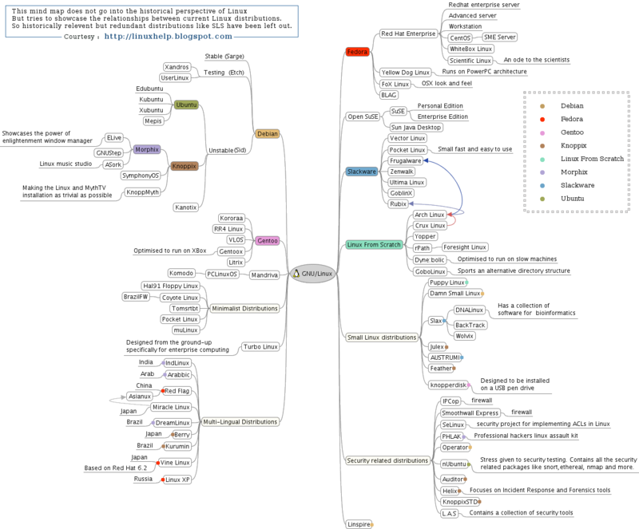
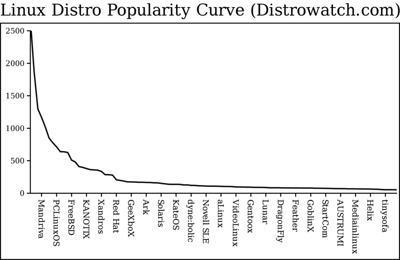

With Linux, each OS distribution carves out a niche to meet its users' needs. There are specialized versions of Linux containing educational software, tools for musicians, versions dedicated to embedded or low-end hardware, and regional versions of Linux produced in places like Spain and China.
The various distributions have much in common, including the Linux kernel, but use different free software and installation mechanisms. One distribution called Gentoo downloads only one binary, a bootstrapping compiler. The rest of its deliverables are the source code to the components they offer. This gives the user the ability to build a system highly optimized for his hardware.
Some distributions are optimized to run well on old hardware and fit on CDs the size of a credit card:
Damn Small Linux is the most popular Linux for old computers and ships on 80x60 mm CDs.
Linux is very popular on servers, which require an additional focus on performance, reliability, and security. One of the simplest ways to decrease bloat and security risks is to remove the graphical interface:
top - 12:54:17 up 62 days, 20:14, 2 users, load average: 0.16, 0.42, 0.43
Tasks: 127 total, 1 running, 126 sleeping, 0 stopped, 0 zombie
Cpu(s): 0.2% us, 0.3% sy, 0.0% ni, 98.5% id, 0.2% wa, 0.7% hi, 0.2% si
Mem: 514248k total, 489360k used, 24888k free, 79128k buffers
Swap: 1020088k total, 18416k used, 1001672k free, 177528k cached
PID USER PR NI VIRT RES SHR S %CPU %MEM TIME+ COMMAND
2041 root 10 -5 0 0 0 S 0 0.0 0:11.74 usb-storage
1 root 16 0 1564 528 460 S 0 0.1 0:01.09 init
2 root RT 0 0 0 0 S 0 0.0 0:00.01 migration/0
3 root 34 19 0 0 0 S 0 0.0 0:14.63 ksoftirqd/0
4 root RT 0 0 0 0 S 0 0.0 0:00.00 watchdog/0
Screenshot of a text-based Linux process viewer. Just because a computer displays only text doesn't mean there isn't a modern, rock-solid operating system underneath.
It is as hard to write a graphical user interface (GUI) for a server as it is to write the server itself: every new feature in the server needs a corresponding improvement in the administration interface. If your server can generate 1,000 records per second, then your user interface had better be able to handle that without choking.10
While most devices do not need a GUI, desktop users do, and like everything in the free software world today, there are several good choices.
The following map shows the Debian branch of the Linux distribution family tree; they derive from each other, just like in a biological ecosystem:

A portion of the Linux family tree showing the Debian branch, the biggest free software distribution.
Here is a chart showing the relative popularity of Linux distros:

Linux distributions, sorted by popularity. The line shows the divide between both halves of the popularity curve.
What you see here is an almost perfectly smooth curve that illustrates a relatively new idea called the “Long Tail.” One way to think about this idea is to look at the English language. Words like “the” are used with great frequency, but many more words like “teabag” are used infrequently. There is a long tail of infrequently used English words, and to just ignore them would be to throw away much of what makes our language so special.
The lesson of the long tail in business is the importance of catering to customers with special interests. The long tail of Linux distributions means that the creation of a free software ecosystem doesn't mean the end of the free market, or of competition.
Wikipedia and the Linux kernel are two of the best examples of the fact that free software and the free exchange of ideas can create superior products without licensing fees. The mere existence of these premier products, without a gigantic company behind them, is proof that the proprietary development model is doomed.